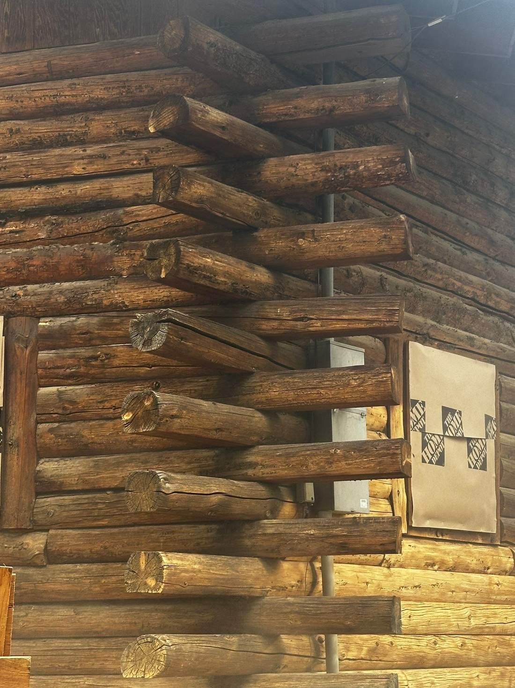
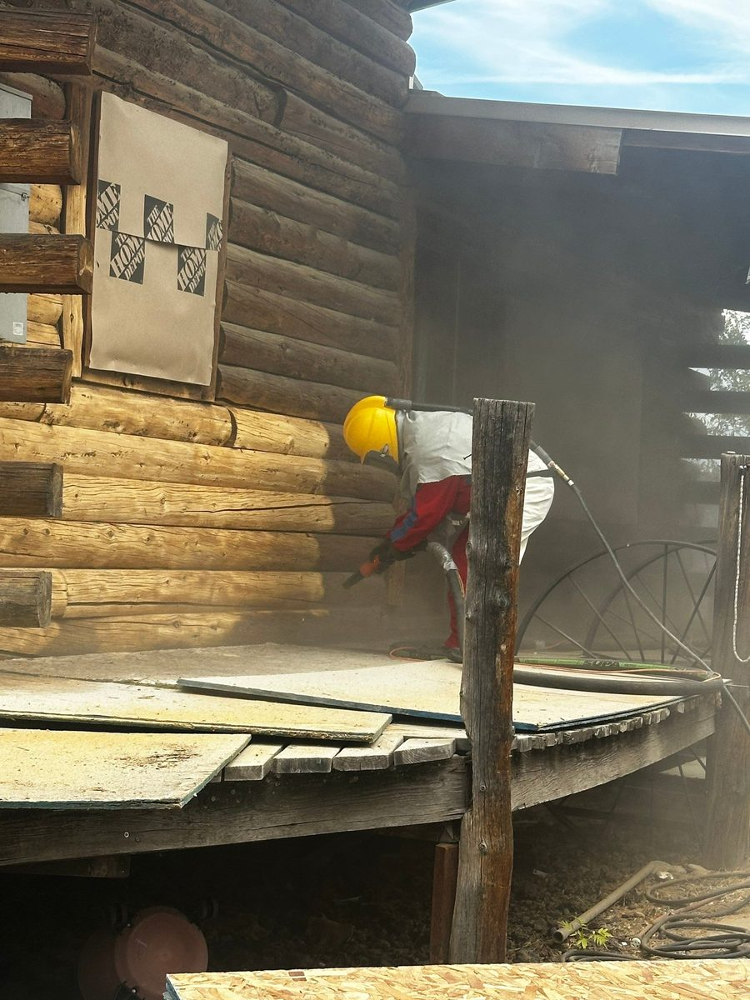
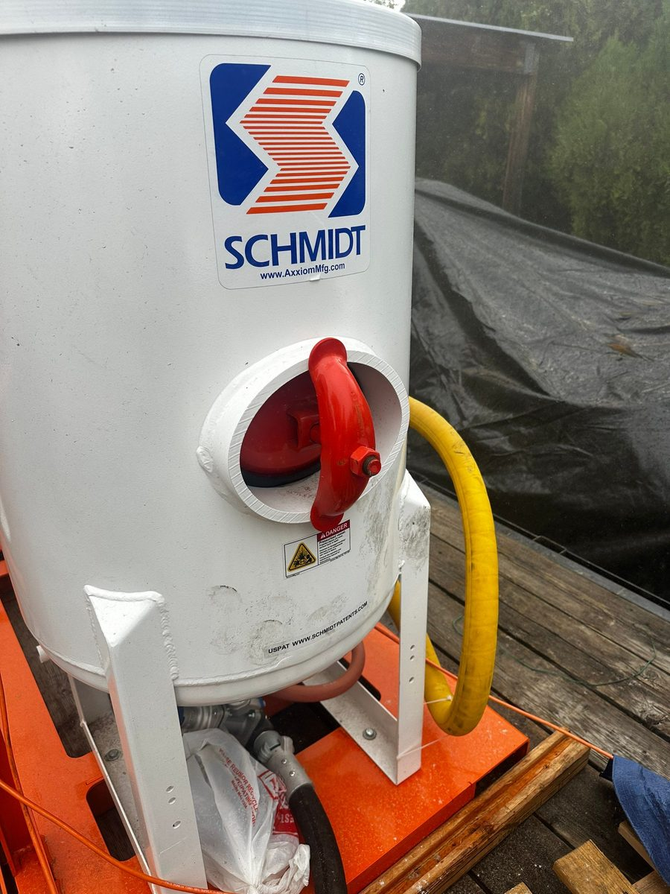
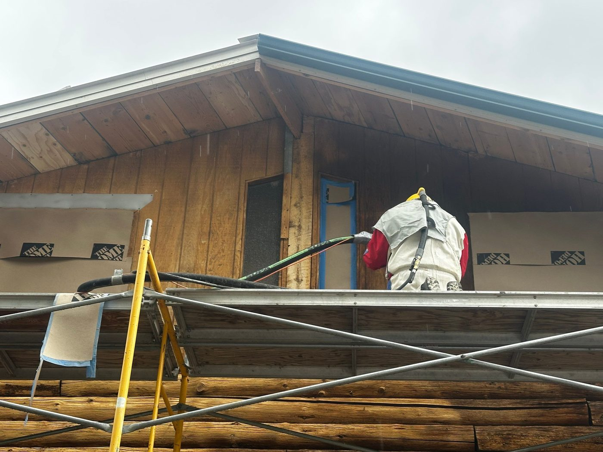

Log Home Media
Blasting in Idaho
When a log home's finish has failed, another coat on top won't fix it. We blast the old stain off back to clean wood, then re-chink and re-stain, with our own rig and our own crew.
Start over at
the wood.
Chase Construction media blasts log homes and log cabins across Sun Valley, Ketchum, and Hailey. If your stain is peeling, flaking, blotchy, or gone gray, or the walls no longer match after repairs, the old finish is in the way. New stain can't soak into wood that's still coated with the old one. Blasting strips it all off so the next finish bonds to the log, not to a failing layer.
Log home sandblasting and media blasting are the same job by two names: compressed air drives a blasting media against the wood to remove stain, sealer, and weathered fibers. Done right, it reaches the checks, notches, and corners that sanding never gets to.
Protect the house.
Then strip the logs.
Blasting is loud, dusty work, and most of doing it well happens before the rig turns on.
1. Assess the finish
Not every tired log home needs blasting. If the finish is sound and just worn, a wash and maintenance coat costs far less. We tell you which one your home needs before we quote anything.
2. Cover and set up
Windows, doors, and fixtures get covered, and scaffolding goes up so the crew can reach every course of logs, from the sill log to the gable.
3. Blast to clean wood
Our crew blasts in supplied-air hoods, breathing filtered air with carbon-monoxide monitoring, and works wall by wall until the old finish is gone and the wood is even.
4. Seal it back up
We re-chink open joints and apply new stain and sealer matched to the log species and each wall's sun exposure, so the house doesn't sit bare through an Idaho season.

A mobile blast rig,
run by our crew.
We don't subcontract the blasting. Chase Construction owns a trailer-mounted Schmidt blast pot and a towable air compressor, so we bring the whole setup to your property.
Having the rig in-house also means blasting fits into a bigger job without a second contractor's schedule. If we're restoring a log home and replacing rotted logs, we can blast the rest of the walls so the new logs and the originals take stain the same way and finish as one house.


Our rig and crew on a recent Wood River Valley log home restoration.
The same rig strips
more than logs.
Because the rig is mobile, we bring sandblasting to the job instead of hauling the job to a shop. On the restoration pictured here, the crew blasted the board siding on the gables along with the log walls below.
- Wood decks and log railings
- Timber posts and exposed beams
- Board, log, and cedar siding
- Log stairs and porch timbers
Have something else that needs stripping? Call 208-897-8100 and tell us the surface. We'll tell you whether blasting is the right tool for it.

Blasting is the start.
The finish is the point.
Plenty of crews can strip a wall. What matters is what goes on next and how long it lasts at this elevation. Chase Construction has built, maintained, and restored log homes across Sun Valley for over two decades, so blasting here is one step in a finish system that we stand behind, not a one-off service.
- Log home and log cabin media blasting and sandblasting
- Stain and sealer removal back to bare wood
- Re-chinking and re-staining after blasting
- Decks, timbers, beams, and wood siding
- Sun Valley, Ketchum, Hailey, Bellevue, and surrounding area
Media blasting,
answered.
What is log home media blasting?
Media blasting uses compressed air to push an abrasive blasting media against the logs, stripping old stain, failed sealer, and gray weathered fibers back to clean, sound wood. It is the same idea as sandblasting, and people use the two terms interchangeably. It is the most thorough way to prepare a log home for a new finish when the old one has failed.
Is media blasting better than sanding or chemical stripping a log home?
For a whole house, usually yes. Sanding round logs by hand is slow and leaves the finish in the checks and corners. Chemical strippers need heavy rinsing and soak the wood with water. Blasting reaches into checks, notches, and corners and leaves an even surface that new stain can soak into. For small spots or a sound finish that just needs a refresh, a wash and recoat may be all your home needs, and we will tell you if that is the case.
Does media blasting damage the logs?
Not when the pressure and media are set for the wood. The goal is to take off the finish and the weathered surface, not to carve into the log. Blasting does leave the wood slightly textured, which helps new stain penetrate. We check the surface after blasting and before any stain goes on.
How do you protect windows, doors, and the rest of the house?
Before blasting starts we cover windows, doors, and fixtures, then work the walls from scaffolding. Our crew blasts in supplied-air hoods fed from a filtered breathing-air system with carbon-monoxide monitoring.
What happens after a log home is blasted?
Bare logs should not sit unprotected through an Idaho season, so blasting is followed by re-chinking where the joints need it and a new stain and sealer. We handle chinking and staining ourselves, so it is one crew and one job from bare wood to finished walls.
How much does log home media blasting cost in Idaho?
Blasting is usually priced by wall surface area. The biggest variables are the type and thickness of the old finish, wall height and access, how much needs to be covered and protected, and whether the job includes re-chinking and re-staining afterward. We look at the home first and quote the work it actually needs.
Do you sandblast anything besides log homes?
Yes. The same mobile rig strips decks, log railings, timber posts and beams, and wood siding. If you have another surface or material in mind, call us and we will tell you whether it is a good fit.
Find out if your logs
need blasting.
We walk the property, look at the finish, and tell you whether your home needs blasting or just a maintenance coat before any work begins.
Request an Assessment